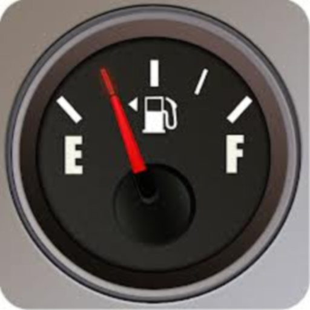

FillUp - Gas Mileage Log
https://play.google.com/store/apps/details?id=com.github.wdkapps.fillup
A simple, easy to use Android application to calculate and track your gas mileage (fuel economy/efficiency). When you buy gasoline, just enter the amount you purchased and your current odometer value. FillUp will calculate your mileage and maintain a log of your fill-ups.
Features:
- Manages data for one or more vehicles.
- Calculates and plots average gas mileage.
- Calculates and plots monthly totals for gas purchased and distance driven.
- Stores all data on the device – doesn’t use your data plan.
- Can import/export your data to CSV files on your sdcard.
- Share the CSV files with other Apps for cloud backup! (Dropbox, e-mail, etc.)
- Totally FREE!! No ads!
Selectable units of measurement - can calculate:
- miles per gallon (MPG)
- kilometers per liter (KM/L)
- liters per 100 kilometers (L/100KM)
- miles per imperial gallon (UK MPG) – from miles and liters.
- miles per imperial gallon (UK MPG) – from kilometers and liters.